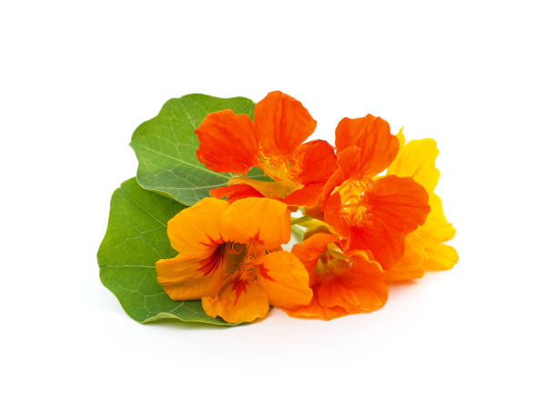

Canteiro 3 (pedagógico)
Conheça as variedades cultivadas na nossa horta escolar
Capuchinho

Planta com flores coloridas e comestíveis, usadas para decorar e dar sabor suave às saladas. Suas folhas também podem ser consumidas.
Características Principais
Nome científico
Tropaeolum majus
Folhas
Arredondadas, lisas, verdes
Clima
Ameno a quente (15–25 °C)
Ciclo de cultivo
60–80 dias
Lavanda

Arbusto aromático de flores lilases, usado em chás, óleos e aromatizantes. Tem aroma relaxante e delicado, além de ser ornamental.
Características Principais
Nome científico
Lavandula angustifolia
Folhas
Finas, alongadas, prateadas, aromáticas
Clima
Mediterrâneo, ensolarado e seco (15–25 °C)
Ciclo de cultivo
Perene (floresce após 120–150 dias)